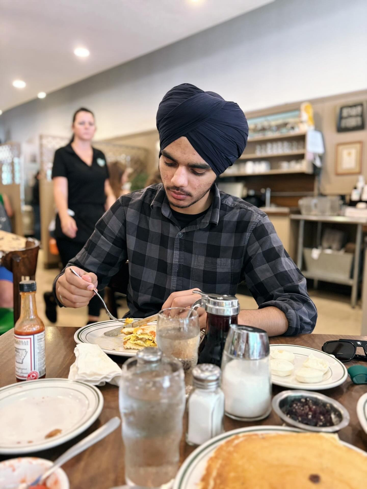

Jaskirat Singh
email: jxs4079@mavs.uta.edu phone: 8178228075

OBJECTIVE
As a sophomore pursuing a Bachelor’s degree in Computer Science, I am seeking an internship to apply my technical knowledge, strengthen my problem-solving skills, and gain hands-on industry experience. Eager to contribute to innovative projects while advancing my growth as a computer science professional.
SKILLS
- Programming Languages: Python, Java
- Data Structures & Algorithms: arrays, linked lists, sorting techniques, file handling
- Database Connectivity: Python-MySQL
- Hardware & Networking: Raspberry Pi, PIR sensors, UDP networking
- Software Engineering: menu-driven programs in C, modular programming
- Web Development: learning JavaScript, HTML, CSS, React & Python Flask
- Version Control: basic Git
- Problem Solving: electronic voting machine, career DB app
EDUCATION
Bachelor of Science in Computer Science
University of Texas at Arlington (UTA), Arlington, TX
Expected Graduation: May 2028 | GPA: 3.6
Relevant coursework: Data Structures, Discrete Math, Calculus II
Work Experience
Residential Peer Mentor (RPM)
UTA, Arlington, TX | Aug 2025 – Present
- Support first-year residents, foster engagement and development.
- Plan events and workshops, mentor peers.
Volunteer Experience
Indian Red Cross Society, Gurdaspur
2019 – 2024
- Organized motivational seminar, drug awareness camps.
Leadership Roles
UTA Ambassador
UTA, Arlington, TX | 2025 – Present
- Represent UTA at events, mentor and guide students.